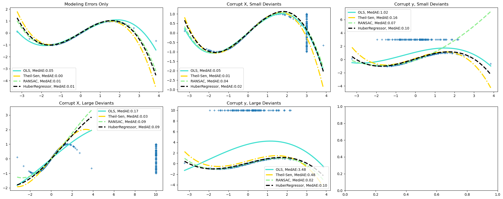

Robust linear estimator fitting#
We fit a sine function.! Robust fitting test is in 3 situtations:
No outliers
Outliers in X, small/large
Outliers in y, small/large
We use median absolute error to jude the quality of the prediction.
import numpy as np
from matplotlib import pyplot as plt
from sklearn.linear_model import (
LinearRegression,
RANSACRegressor,
HuberRegressor,
TheilSenRegressor
)
from sklearn.metrics import median_absolute_error
from sklearn.pipeline import make_pipeline
from sklearn.preprocessing import PolynomialFeatures
np.random.seed(42)
X = np.random.normal(size=400)
y = np.sin(X)
X = X[:, np.newaxis] # Make sure X 2d
X_test = np.random.normal(size=200)
y_test = np.sin(X_test)
X_test = X_test[:, np.newaxis]
y_errors = y.copy()
y_errors[::3] = 3 # 标记一些X为3
X_errors = X.copy()
X_errors[::3] = 3
y_errors_large = y.copy()
y_errors_large[::3] = 10
X_errors_large = X.copy()
X_errors_large[::3] = 10
estimators = [
("OLS", LinearRegression()),
('Theil-Sen', TheilSenRegressor(random_state=42)),
('RANSAC', RANSACRegressor(random_state=42)),
('HuberRegressor',HuberRegressor())
]
colors = {
"OLS": "turquoise",
"Theil-Sen": "gold",
"RANSAC": "lightgreen",
"HuberRegressor": "black",
}
linestyle = {
"OLS": "-",
"Theil-Sen": "-.",
"RANSAC": "--",
"HuberRegressor": "--"
}
lw = 3
x_plot = np.linspace(X.min(),X.max()) # 回归线
fig,axes = plt.subplots(2,3, figsize=(20,8))
axes = axes.ravel()
for title, this_X, this_y,ax in [
("Modeling Errors Only", X, y,axes[0]),
("Corrupt X, Small Deviants", X_errors, y,axes[1]),
("Corrupt y, Small Deviants", X, y_errors,axes[2]),
("Corrupt X, Large Deviants", X_errors_large, y,axes[3]),
("Corrupt y, Large Deviants", X, y_errors_large,axes[4]),
]:
ax.plot(this_X[:,0], this_y,'+')
ax.set_title(title)
for name, estimator in estimators:
model = make_pipeline(PolynomialFeatures(3),estimator)
model.fit(this_X, this_y)
mse = median_absolute_error(model.predict(X_test),y_test) #预测mse
y_plot = model.predict(x_plot[:,np.newaxis])
ax.plot(x_plot,y_plot,color=colors[name],
linestyle=linestyle[name],
linewidth=lw,
label=f"{name}, MedAE:{mse:.2f}"
)
ax.legend()
fig.tight_layout()

📈
Outliers have big impact on OLS-Linear regressor.
RANSAC is best for y outliers.
Thelil-Sen is best for X outliers